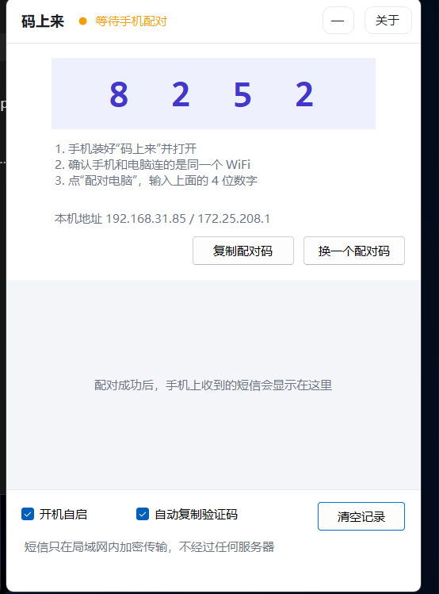
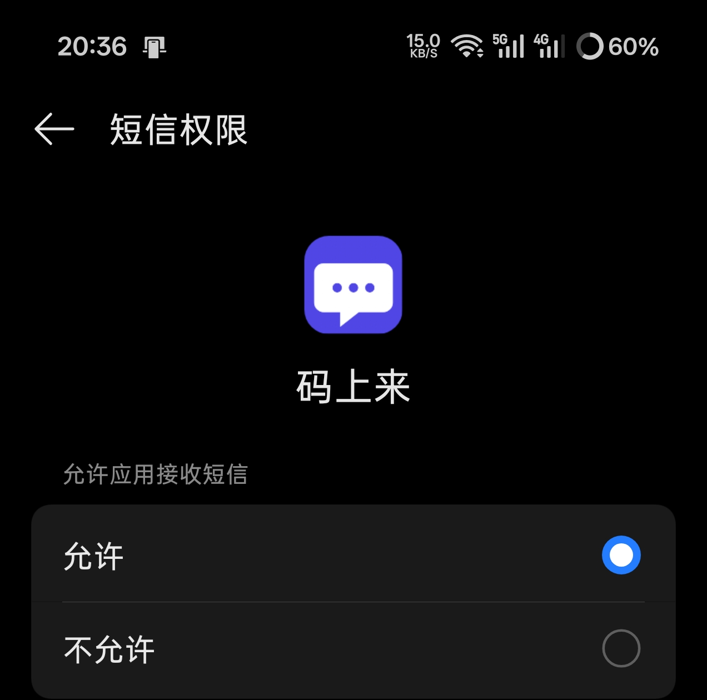
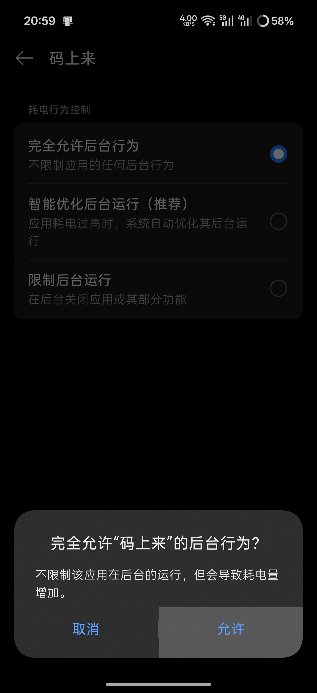
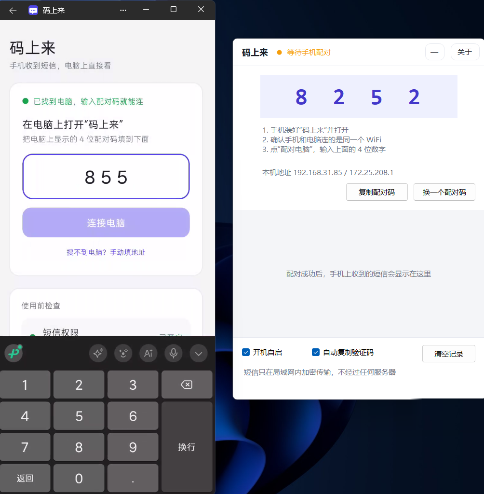
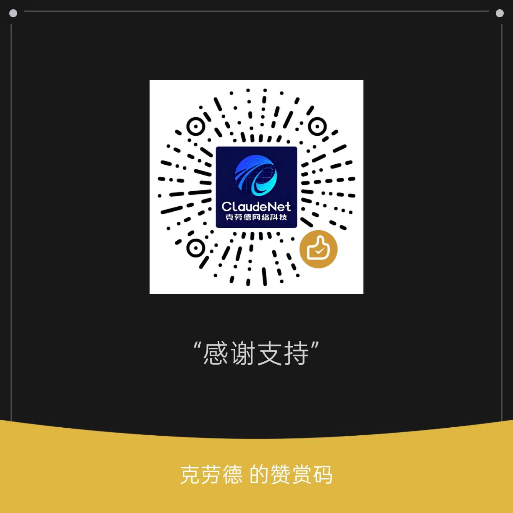

它解决什么问题
登录网银、注册账号、改密码……验证码发到手机上，人却坐在电脑前。解锁手机、切到短信、记住那 6 个数字、再回到电脑——每次都这样。
码上来在你自己的手机和电脑之间搭一条加密的局域网通道：手机收到的每一条短信，立刻出现在电脑窗口里实现不用看手机即可接受验证码；验证码会自动高亮、自动复制到剪贴板，你直接 Ctrl+V 就行。
没有账号，没有服务器，没有广告。手机和电脑连同一个 WiFi 就能用。
特性
| 功能 | 说明 |
|---|---|
| 免安装 | 电脑端是单个 exe（自带运行时），双击就跑；手机端一个 APK |
| 4 位配对码 | 电脑上显示 4 位数字，手机上输一次，之后自动连接 |
| 验证码自动复制 | 识别到验证码直接进剪贴板，也可以点通知一键复制 |
| 聊天气泡列表 | 短信按时间倒序，带验证码的那条高亮显示，点一下就能复制 |
| 关窗后台运行 | 电脑端右上只有"最小化"和"关于"，退出走托盘菜单，不占任务栏 |
| 开机自启 | 勾一下即可（写当前用户的启动项，不需要管理员权限） |
| 贴边不打扰 | 无边框小窗，默认停在屏幕右下角，可以随手拖到别处 |
下载
| 平台 | 文件 | 说明 |
|---|---|---|
| Windows 10/11 (x64) | mashanglai-v1.5-windows-x64.exe | 在 Releases 里下载，双击即用（免安装，自带运行时） |
| Android 8.0+ | dist/码上来-1.5.apk | 在 Releases 里下载 mashanglai-v1.5-android.apk 也行 |
Release 里的文件名用英文（mashanglai-...），是为了避免部分系统下载中文名时乱码；仓库里的源码文件名仍保留中文。
Windows 端首次运行如果弹出防火墙提示，请勾选"专用网络"并允许——不然后面手机搜不到电脑。
国内下载（蓝奏云）：https://wwbjs.lanzoue.com/b0mcu44gj 密码：2dq1
GitHub 打不开或者下载慢的话，用上面这个链接。两边内容一样。
使用教程
第一步：电脑端
双击 码上来.exe，窗口会出现在屏幕右下角，上半部分是一个 4 位配对码（比如 8252），旁边写着本机地址。

第二步：手机端
- 把
码上来-1.5.apk传到手机，点击安装（首次需要在系统里允许"安装未知来源应用"）。 - 打开 App，它会依次请你开两个权限，都点允许：
- 短信权限 —— 不给自己收不到任何短信
- 后台运行 —— 忽略电池优化，不然锁屏后系统会限制它（部分小米/华为等机型还会让你去开"自启动"，可以直接跳过去）


- 页面会自动搜索同一 WiFi 下的电脑，搜到之后直接输入电脑上那 4 位数字，输满自动连接。

手机和电脑必须在同一个局域网（同一个路由器的 WiFi；电脑插网线、手机连同一路由器的 WiFi 也算）。不需要联网，数据不出路由器。
第三步：开始用
配对成功后不用再管它。以后手机每收到一条短信，电脑窗口里立刻弹出对应的气泡：
- 带验证码的会高亮显示，并且自动进了你的剪贴板，直接 Ctrl+V
- 电脑右下角会同时弹出系统通知，点一下通知会打开窗口并复制那条的验证码
- 点气泡里的"复制"或点整条气泡也能再复制一次
电脑端界面
| 位置 | 作用 |
|---|---|
| 顶部 | 标题、连接状态、关于 按钮、最小化 按钮（没有关闭按钮，退出请用托盘图标右键 → 退出） |
| 中间 | 收到的短信（气泡列表，越新越靠上） |
| 底部 | 开机自启、自动复制验证码、清空记录 |
| 托盘图标 | 双击 = 把窗口叫回来；右键 = 显示窗口 / 复制配对码 / 退出 |
手机端界面
- 主页面只做三件事：显示连接状态、显示记录条数、检查权限（绿色=已开启，橙色=去开启）
- 底部
关于进入独立页面：版本号、开发者、微信赞赏码、使用声明
常见设置
- 不想开机启动：取消勾选底部"开机自启"即可（会同步删掉启动项）
- 不想自动复制：取消勾选"自动复制验证码"，改成手动点气泡复制
- 换一台电脑：新电脑上重新配对一次，手机端不用改任何设置
- 换一个配对码：电脑端配对页点"换一个配对码"，手机上重新输一次
常见问题
手机搜不到电脑？
确认两部设备在同一个 WiFi（手机别开热点/VPN/APN 隔离）；确认 Windows 防火墙允许了它（首次运行会弹提示）；或者用手机上的"搜不到电脑？手动填地址"，输入电脑界面显示的 IP。
显示"已配对"但收不到短信？
检查主页面"短信权限"那一项是不是绿色。部分国产 ROM 还需要在「设置 → 应用 → 码上来」里允许自启动/后台运行。
锁屏之后还会收到吗？
会。它用的是系统级的短信广播，不需要 App 常驻后台。但要保证：① 短信权限已给；② 电池优化已忽略。个别系统在锁屏后会断开 WiFi，那样短信会先存在手机里，等网络恢复自动补发，电脑上只是晚一点出现。
为什么不走蓝牙？
车机那套读短信走的是蓝牙 MAP 协议，属于系统级能力，第三方基本复刻不了（尤其 iPhone 完全不给）。而局域网方案更快、更省电，还能全程加密。
iPhone 能用吗？
不能。iOS 不向第三方开放短信内容，任何声称能做到的 App 都是假的。
支持 5G 消息 / RCS / iMessage 吗？
不支持，只处理普通短信（SMS）。
安全说明
- 不联网：电脑端只监听局域网，手机也只连电脑的 IP，全程没有第三方服务器参与，也不会上传任何数据。
- 正文全程加密：短信内容用 AES-256-GCM 加密后传输，同时保证机密性和完整性；被篡改的报文直接丢弃。
- 配对码不等于密钥：配对时传的是
HMAC(PBKDF2(配对码))（20 万次迭代），配对成功后两边换成一串随机 32 字节长密钥，之后不再使用配对码。 - 防猜防重放：连续 5 次输错配对码锁定 60 秒；配对报文带时间戳和随机数，重复报文会被拒绝。
- 数据只在你自己的设备上：电脑端的记录保存在程序目录的
data/文件夹里，手机端保存在应用私有目录，随时可以一键清空。
提醒一句：验证码等于你的第二把钥匙。这套工具适合"手机在自己身上、想在大屏幕上更快更方便地复制"，不要把转发结果再同步到群聊或云端，那等于把双重验证降级成单重。
工作原理
手机(码上来 APK) ──局域网加密──> 电脑(码上来.exe) ──自动复制──> 剪贴板
│ │
└─ 系统短信广播 ─> 队列 ─> 加密 └─ 解密 ─> 去重 ─> 识别验证码 ─> 显示| 环节 | 做法 |
|---|---|
| 找电脑 | 手机向局域网广播一个 UDP 包，电脑回自己的信息；也可以用 IP 手动指定 |
| 配对 | PBKDF2-HMAC-SHA256（20 万次迭代）派生密钥 + HMAC 证明，电脑验证后回发随机长密钥 |
| 传短信 | AES-256-GCM 加密后 POST 到电脑的 8789 端口 |
| 兜底 | 电脑没开机时短信留在手机队列里，下次有新短信或每隔 15 分钟自动补发 |
项目结构
android/ 手机端（Kotlin，零第三方依赖）
app/src/main/java/com/smslink/
MainActivity.kt 单页主界面：配对、状态、权限
AboutActivity.kt 关于页面
Pairing.kt 配对流程
Crypto.kt PBKDF2 / HMAC / AES-GCM（与电脑端一致）
Net.kt 局域网发现 + HTTP
SmsReceiver.kt 系统短信广播接收
Uploader.kt 加密上报 + 失败重试队列
Prefs.kt 本地配置
app/src/main/res/ 布局与资源
win/ 电脑端（C# / .NET 8 WinForms，零第三方依赖）
MainForm.cs 主窗口：气泡列表、配对、设置
AboutForm.cs 关于窗口
Protocol/
Server.cs 极简 HTTP 服务（只开放 3 个接口）
Discovery.cs 局域网发现
Crypto.cs 与手机端一致的加密实现
CodeExtractor.cs 验证码识别
Store.cs 配置与存档
Ui/ 自绘控件与配色
make-icon.ps1 图标生成脚本
dist/ 编译好的安装包
docs/ 赞赏码等素材自己编译
电脑端（需要 .NET 8 SDK）
cd win
dotnet publish -c Release -r win-x64 --self-contained true \
-p:PublishSingleFile=true -p:EnableCompressionInSingleFile=true \
-p:IncludeNativeLibrariesForSelfExtract=true产物是单个 码上来.exe（约 64 MB，自带运行时）。
手机端（需要 JDK 17 + Android SDK 34）
cd android
gradlew.bat assembleRelease # macOS / Linux 用 ./gradlew产物在 app/build/outputs/apk/release/app-release.apk。签名信息放在 android/keystore.properties（已在 .gitignore 里，不会进仓库）。
支持作者
如果这个小工具帮到了你，可以扫码请我喝杯咖啡 ☕

开发者：Otemain ｜ 邮箱：dog8520963@163.com
免责声明
本软件只用于接收本人手机的短信。请勿用于监控他人设备，此类行为可能违反法律，后果自负。软件按"现状"提供，不对使用造成的任何损失承担责任。